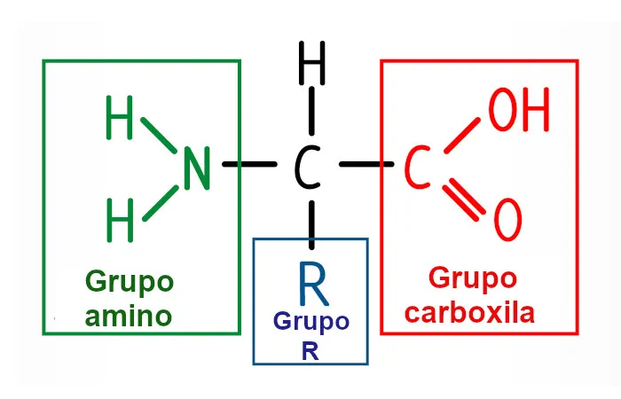
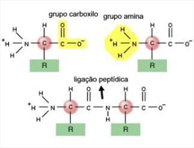

Os aminoácidos são moléculas orgânicas que funcionam como unidades básicas das proteínas. Eles são formados principalmente por carbono, hidrogênio, oxigênio e nitrogênio, podendo também apresentar outros elementos.
As proteínas são formadas pela união de vários aminoácidos, organizados em sequências específicas. A ordem desses aminoácidos influencia a estrutura e a função que cada proteína desempenha no organismo.
As proteínas desempenham diversas funções nos seres vivos. Algumas atuam na construção e reparação dos tecidos, outras transportam substâncias, defendem o organismo e aceleram reações químicas, como as enzimas.
A ligação peptídica é a união entre aminoácidos, permitindo a formação das cadeias que constituem as proteínas.

Essa ligação ocorre entre o grupo carboxila de um aminoácido e o grupo amino de outro, com liberação de uma molécula de água. A repetição desse processo forma uma cadeia de aminoácidos, que pode se organizar e originar uma proteína.
As proteínas estão presentes em diversos alimentos e são importantes para o crescimento e a manutenção do organismo.
Alimentos como ovos, leite, carnes e feijão são fontes de proteínas. Durante a digestão, elas são quebradas em aminoácidos, que são absorvidos pelo organismo e utilizados na produção de novas proteínas.
Essas moléculas participam da construção e reparação dos tecidos, da defesa do organismo e de várias atividades essenciais para o funcionamento do corpo.